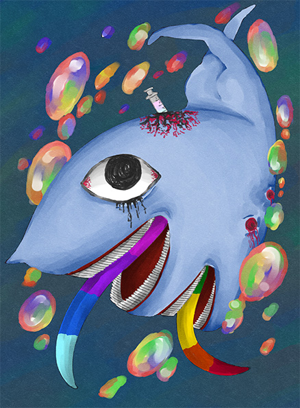

- 概要
- 『Lobotomy Corporation』の二次創作。
- 製作期間
- 2023年3月~2023年4月
- 制作時間
- 5日
- コンセプト
- 特徴的でショッキングな見た目を活かし、まず目が合うように描いた。
飴玉が好きな赤子であり、逃げるときに水の中を泳ぐため、辺りにカラフルな泡を描写した。
塗りも柔らかなタッチになるようにしている。 - 使用ツール
- CLIP STUDIO PAINT EX